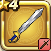

ラダトームのつるぎ
攻略班 5.0点 / いなずま斬りぶんまわしはやぶさ斬り
くわしい特徴
【レベル別習得スキル】 Lv1いなずま斬り（消費MP：3）いなずまを剣に纏わせて斬り敵1体に威力130%のデイン属性斬撃ダメージを与える Lv8ぶんまわし（消費MP：9）振りまわした剣で、敵全体に威力120%の斬撃ダメージを与える Lv20はやぶさ斬り（消費MP：11）はやぶさのごとき高速の剣技で敵1体に威力120%の斬撃攻撃を2回する Lv28りゅうおうへのダメージ+5% Lv32デイン属性斬撃・体技ダメージ+2% Lv36攻撃時+2%の確率で混乱を与える Lv40攻撃力+5 【限界突破スキル】 1凸スキルの斬撃・体技ダメージ+3% 2凸スキルの斬撃・体技ダメージ+3% 3凸スキルの斬撃・体技ダメージ+3% 4凸スキルの斬撃・体技ダメージ+3%